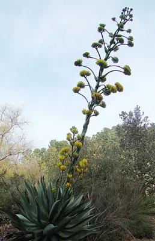

pranet · 出典付きの植物図鑑
アガヴェ・アトロヴィレンス
Agave atrovirens Karw. ex Salm-Dyck · Asparagaceae

Agave atrovirens, called maguey verde grande is a species of Agave native to Oaxaca, Puebla and Veracruz states in Mexico. It is one of the largest of all the Agaves, approached in size only by Agave missionum, and occasionally reaching a weight of 2 t. Each succulent leaf can be up to 4.5 m (15 ft) long and weigh 45 kg (99 lb) apiece. In the nominate variety A. a. var. atrovirens these leaves can also be up to 40 cm (16 in) wide. As in other Agaves the leaves form a rosette, from the center of which, after many years, a panicle of flowers emerges on a long scape or peduncle which at first looks like a vast stalk of asparagus, but later grows to more than 12 m (39 ft) height, develops side branches near the top and numerous flowers which open red and gradually turn yellow. Each rosette flowers and fruits once, then dies. According to Fayaz this is one of the species which makes offsets or "pups". It grows naturally only between 1,800–3,400 m (5,900–11,200 ft) where cloud cover is more frequent.
出典: Wikipedia 英語版「Agave atrovirens」 · CC BY-SA 4.0
異名: Agave coccinea Roezl ex Jacobi
同定や利用は自己責任でお願いします。この図鑑だけを根拠に野生の植物を食べないでください。
出典
- 学名: World Flora Online Plant List 2026-06 · CC0 1.0
- 名前: Wikipedia の記事名と Wikidata · CC0 1.0（Wikidata）。記事名は事実
- 説明: Wikipedia 英語版「Agave atrovirens」 · CC BY-SA 4.0
- 食用・毒性: World Checklist of Useful Plant Species (Diazgranados et al. 2020, RBG Kew) · CC BY 4.0
- 分布: World Checklist of Vascular Plants (WCVP), RBG Kew, version 2026-06-04 · CC BY 3.0
このページは pranet のデータから自動生成しています。コードは MIT、データは項目ごとのライセンス（説明）。